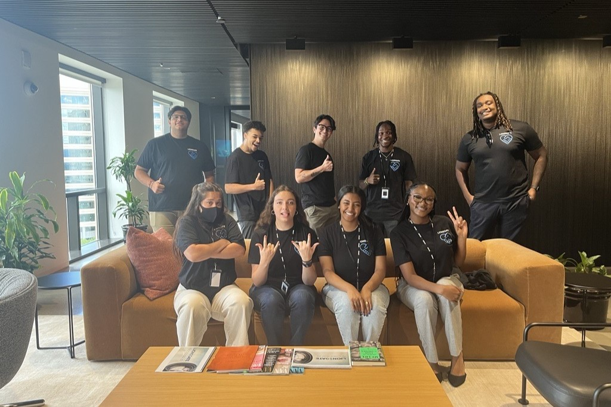

A Typical Day
As an intern at EA, each day is filled with exciting challenges and learning opportunities. You will start your day by attending the daily stand-up meeting with your team, where you discuss ongoing projects and any bugs that need to be addressed.
After the meeting, you will dive into testing new game features, documenting any bugs you find, and collaborating with developers to ensure a smooth gaming experience for players.
Learning and Growth
Interns at EA are encouraged to ask questions and seek feedback. You will have regular check-ins with your mentor, who will guide you through your tasks and help you develop your skills in quality assurance.
Additionally, you will have opportunities to attend workshops and training sessions that focus on the latest QA tools and methodologies.

Conclusion
Overall, a day in the life of an intern at EA is dynamic and rewarding. You will gain hands-on experience in the gaming industry and build valuable connections that can help you in your future career.